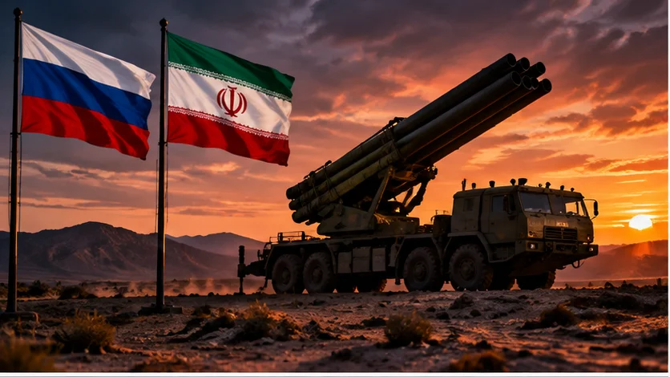

MOSCOW–TEHRAN AXIS!
Reported rocket-launcher deal raises new questions about Russia–Iran military cooperation

Original AI editorial illustration; not documentary photography.
TEXAS NEWS STUDIO — November 6, 2026. Original analysis and reporting context based on the attributed source below.
A reported arms agreement draws scrutiny
A reported rocket-launcher deal between Russia and Iran is drawing renewed attention to military cooperation between Moscow and Tehran. Reporting on November 6 described the agreement alongside high-level diplomatic contacts involving Russian President Vladimir Putin and senior Iranian security figures. The timing is significant: both governments are confronting pressure from the United States and its partners, although their immediate military priorities differ.
Why rocket systems matter
Rocket-launcher systems can provide mobile firepower, but the practical significance of any deal depends on the equipment involved, delivery schedules, training, ammunition supplies and whether systems actually enter service. A reported agreement is not proof that equipment has already arrived or been deployed. Those distinctions matter when assessing the threat.
A relationship with wider consequences
Russia has fought a prolonged war in Ukraine, while Iran remains at the center of confrontation over its nuclear program and regional military activity. Their cooperation is therefore watched closely by NATO governments and Middle Eastern states. Arms transfers, intelligence sharing and diplomatic coordination are distinct activities and should not be treated as interchangeable.
What comes next
Watch for official confirmation of the precise systems, credible evidence of deliveries, and responses from Washington and European governments. Until then, the scale and operational impact of the reported arrangement remain uncertain.